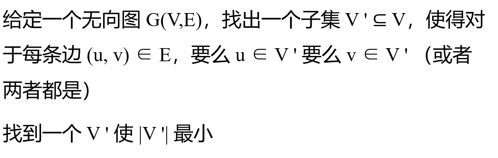
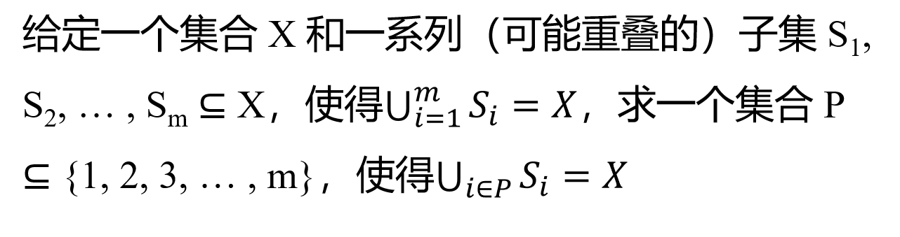
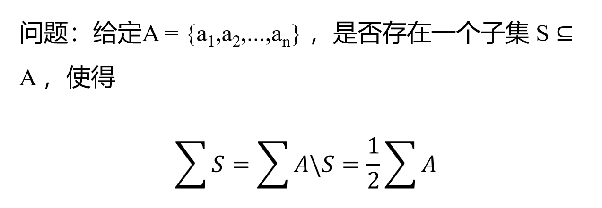

# Overview
部分问题的解答中，关于怎么逻辑紧密的计算近似比，我实在理解不了、解释不了；
凑合背背应付考试吧
唯一能说的：
我们本节讨论的都是优化问题！！！
判断问题需要转化为优化问题！！！
# 顶点覆盖问题

人话翻译：对于一张图，我要找一群点V′。你看一条边两头不是有两个点吗，我要求对 G 图任意一条边e，都有V′ 中的一个点是 e 的两头之一
因为你想选最少的点解决问题，所以问题成本 C 就是选了多少个点，即点的数量
# 具体近似算法
随机算法，一开始V′ 为空，
- 在 G 图上任取一条边 e
- 将 e 的两端点u,v 并入V′
- 把E 中所有以 u 为一头端点的边删掉，再把E 中所有以 v 为一头端点的边删掉
- 循环，直到 E 为空
# 时间复杂度
每次循环都会选出两点一边，所以你的算法时间复杂度为O(C/2)
# 近似率
对于近似率Q(n)，由于这是一个求最小问题，俺们的方法应该比最优方法要孬。近似比永远不小于 1，小的放分母，所以把最优Copt 放分母上
那咋算呢，回顾我们的随机算法，我们每轮循环会随机选一条边。到结束，我们选择所有边，是一群没有公共顶点的边，数量为 k。那我们的近似算法就选择了 2k 个点；
对于 k 个没有公共顶点的边，只要满足题设条件，那每条边至少要选一个顶点。所有满足条件的选法，其选点数量C≥k，最优选法是 {所有满足条件的选法} 的一员，所以Copt≥k
那CoptCours≤2，近似率为 2
# 集合覆盖问题

人话翻译：对于 n 个元素，我有一系列元素组成的集合{S}={S1,S2,…,Sm}。这群集合并在一起覆盖了每个元素，但我嫌m 太多了，我想从这m 个集合中选一部分{S′}，{S′} 含有 k 个子集。{S′} 里所有子集并起来依然能覆盖所有元素，希望 k 最小
因为你想选最少数量的子集解决问题，所以问题成本 C 就是选了多少个子集，即子集的数量
# 具体近似算法
贪心算法，一开始{S} 包含 m 个子集；{x} 表示所有还没被覆盖过的元素，初始为{S} 并起来的所有元素
- 在S 中选择一个Sk，Sk 中包含的元素和{x} 交集最大；换句话，Sk 能覆盖最多的还没被覆盖的元素
- {S} 中删除Sk
- {x} 中删除所有Sk 的元素
- 循环，直到所有元素被覆盖
# 时间复杂度
每次循环都会选出一个子集，所以你的算法时间复杂度为O(C)
# 近似率
对于近似率Q(n)，由于这是一个求最小问题，近似方法应该比最优方法要孬。近似比永远不小于 1，小的放分母，所以把最优Copt 放分母上
回顾我们的随机算法，假设第 k 轮循环，{xk} 大小为numk，也就说还有numk 个元素一次都没被覆盖过
对于原{x}，Copt 大小的{S′} 可以并起来全部覆盖；{xk} 是{x} 的一部分，所以{S′} 也能覆盖{xk}，且{S′} 中的每个子集，平均要覆盖{xk} 中numk/Copt 个元素。
那放在这第 k 轮循环里，{Sk} 中依然有{S′} 中的子集S′；不然若没有，说明之前的循环中已经把{S′} 取完了，那已经全覆盖了，不需要看第 k 轮循环了
子集S’至少要覆盖numk/Copt 个{xk} 中的元素：因为numk 被Copt 个子集S′ 瓜分
- 要是{S′} 在第k 轮一个没少，那分母是Copt；
- 要是第 k 轮之前有的S′ 被选走过了，但他们一个{xk} 中的元素没覆盖到，不干活；剩下的S′ 数量更少了，平均每个要分的{xk} 中的元素更多了；
在第 k 轮我们选择子集Sk，这个选择是贪心的，是能覆盖{xk} 中元素数量最多的，所以Sk>S′，Sk 至少能覆盖numk/Copt 个没覆盖过的元素，Sk 覆盖新元素数≥numk/Copt
那对于 k+1 轮循环，numk+1=numk−Sk 覆盖新元素数，得：numk+1≤numk×(1−1/Copt)
递推，得：numk≤num0×(1−1/Copt)k，num0=n = 输入元素个数
令左边 < 1，经过数值计算化简，得到：
tk>ln(n)
k 是近似算法的最小值，k=⌈tln(n)⌉，由于Cours=k，
所以CoptCours≤ln(n)+1/t≤ln(n)+1
# 分组问题

其中a1>a2>⋯>an
人话翻译：对于 n 个元素的集合，我想切两半，使得集合的总和尽量平分到两个子集里
假设∑A=2L，题目的目标将A 划分为X,Y 两集合，求max(∑X,∑Y) 的最小值
所以问题成本C 就是max(∑X,∑Y)，Copt=L
# 具体近似算法
随机算法：
-
先随机对前 m 个元素随机分配，划入 X，Y
-
对{am+1,…,an} 中的每一个ak，判断∑X 和∑Y，选择较小的一方，将ak 加入其中
-
循环，直到k=n
# 时间复杂度
时间复杂度O(n−m)
# 近似率
由于这是一个求最小问题，近似方法应该比最优方法要孬。近似比永远不小于 1，小的放分母，所以把最优Copt 放分母上
回顾我们的随机算法，不妨假设最终∑X>∑Y，Q(n)=∑X/L
考虑集合A 中最后一个被分到X 的元素ak，它是集合 A 的第k 个元素，那么元素ak：
- 来自步骤 1，是随机分配时分入X
- 来自步骤 2，在分配ak 前，∑X<∑Y
前一种情况暂不考虑（不知道咋考虑……）
考虑后一种情况，其满足：
∑Xk−ak≤∑Yk≤∑A−∑Xk
其中∑Xk,∑Yk 表示划分完ak 后两子集的元素和
变形可得：
∑Xk≤L+2ak
由a1>a2>⋯>an，我们可以得到：
∑A≥∑Xk+∑Yk=sum(a1,a2,…,ak)≥(m+1)×ak
所以Q(n)=∑X/L<1+1+m1